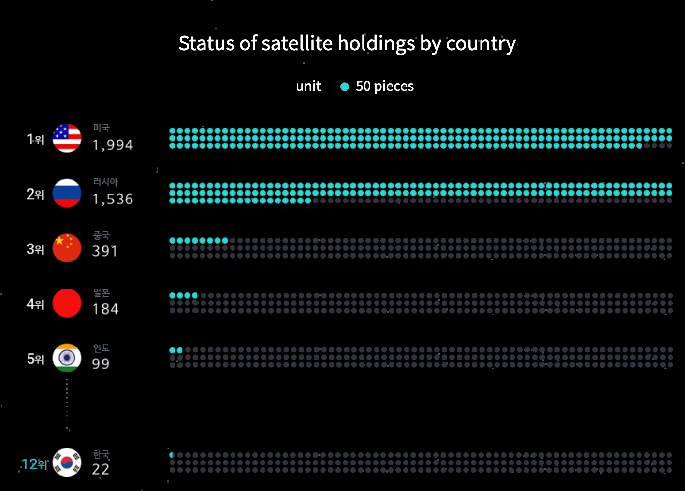

On March 18 last year, Chinese satellite Yunhai 1-02 began mysteriously falling to pieces. At that time, it was unclear whether it was some sort of failure, or the satellite had collided with something in orbit, but soon scientists confirmed that the cause of the issue was a piece of space debris, saying that we might be entering a new era of increasingly frequent space collisions.
In 1957, when the Soviet Union launched Sputnik 1, the first artificial satellite no one could have imagined that satellites would become one of the primary sources of space junk, endangering not just other satellites, human-crewed spacecraft, and the International Space Station, but also people on earth.
The space industry is worth almost half a trillion dollars today, and this number is estimated to triple by the end of this decade. This growth is mainly due to the services that satellites offer, not only in the field of communication or defence but also in the emerging tourism market.
For Robert Massey, an astronomer at the Royal Astronomical Society, the danger is that the growing number of satellites may bring more harm than good, increasing the number of space debris. There are an estimated 130 million pieces of floating space junk orbiting close to earth.Without a removal project, "they could irreparably compromise space sustainability," says Massey.
“They could irreparably compromise space sustainability”
Since the late 1950s, humans have sent more than 12,000 satellites into Earth's orbit. The number of satellite launches has substantially increased during the last two years as Elon Musk's SpaceX, and other companies rush to grab space.
Simply put, when two satellites collide, they smash into thousands of new pieces, called space junk, also known as space debris—some space junk results from blowing up satellites.
Estimates suggest that the total mass of all space objects in Earth's orbit is around 10 000 tonnes.
There are a million objects around the size of a tennis ball, and another 130 million smaller than that.
Only about 30,000 of these are tracked by space surveillance networks and a fragment of the debris can disable or destroy spacecraft and satellite. If debris is in the way, the crew must calculate the risk of a collision. Sometimes it’s necessary to carry out a costly manoeuvre or even take shelter in a space capsule.
Manoeuvres to avoid debris are becoming more frequent and will make future space tourism or travel much more difficult, if not impossible. According to the European Space Agency, spacecrafts have to conduct special maneuvers about once every two weeks in the case of ESA’s 20 satellites.
“Space debris could damage or worsen the services we use.”
Things will only worsen in the next few years as private space companies and governmental space agencies launch up to 66,000 satellites for space-based broadband services alone. Hugh Lewis runs the Astronautic Research Group at the University of Southampton and has been involved in work on space debris modelling for years. He says that it’s hard to paint an accurate picture based on modelling, but it helps develop different scenarios and understand what and why things are happening. According to one of the scenarios, people will feel the effect of the space debris problem in their everyday life.
“Various satellites provide important services. You know, the situation in Ukraine, Starlink provides internet access. If that service disappears, then we could never resolve problems, as we've seen in Ukraine and elsewhere, we'd have to find a different solution, which might be more expensive,” says Lewis.

We now rely on satellites in ways we never did in the past. “Tractors don’t have drivers”, he says, “they harvest crops by themselves because they rely upon satellites to provide them with their information”. Your smartphone relies on GPS, but “if GPS satellite conducts a manoeuvre to avoid a collision, then we might have degradation in the quality of the position,” he says.
John Crassidis, who works with NASA, the US Air Force and other agencies to monitor space debris, says we will feel the full force of Kessler syndrome in the next 50 years. “If we don't do anything in the next 50 years, we will get a Kessler syndrome. We don't want to think 50 years ahead, as there are other problems in the world”, he says. “When I give a presentation to junior and senior high students, I tell them they will have to solve this problem”.
The UK’s space agency is now investing cleaning up this junk that floats around space. With the Royal Air Force it has set up a surveillance service which will predict potential collisions between satellites and space debris.
In the last two years, it has provided just over £5 million to private space companies and academia to develop surveillance and debris removal technology. Still, these projects may not see the light of day until 2025.
A comparison with other governments’ spending is sobering. While NASA is launching the £24m new project, India and Japan are tackling the problem of space waste through ambitious monitoring programmes costing £20m and £18m, respectively. Apart from money, there are technological challenges.